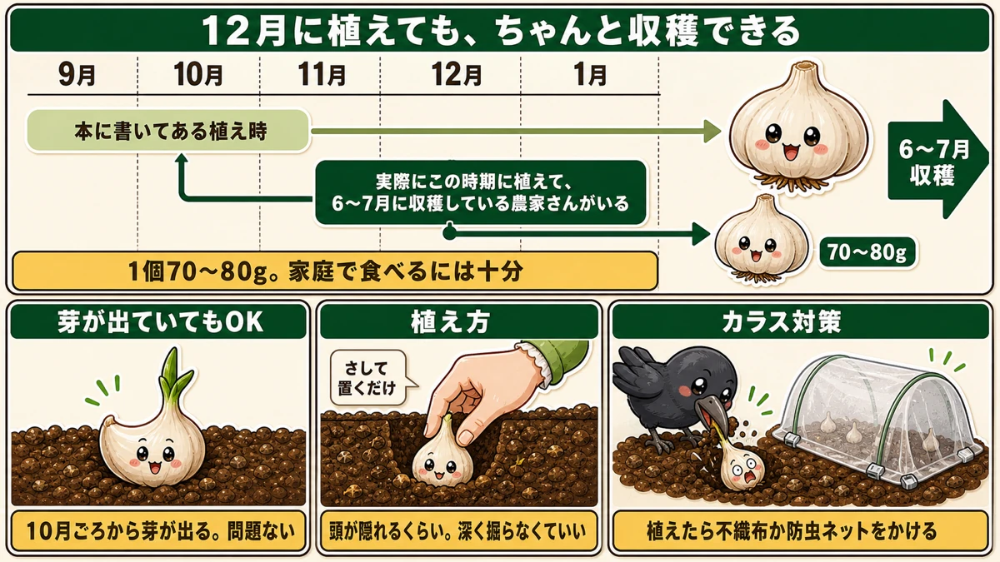
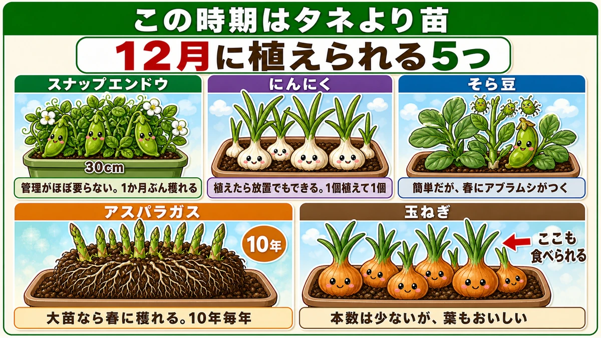
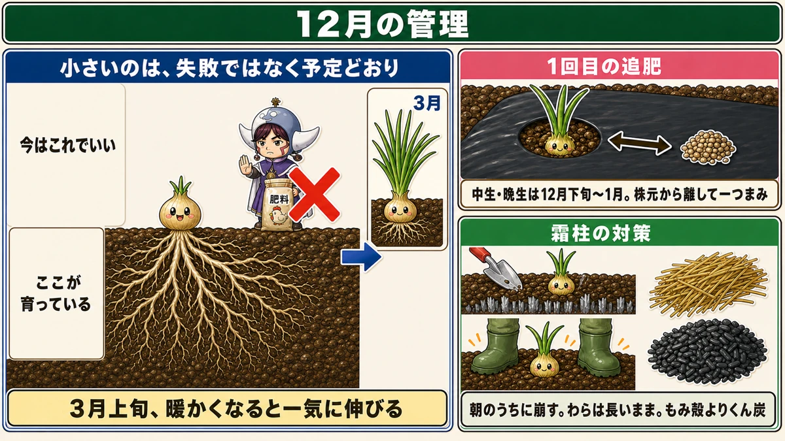
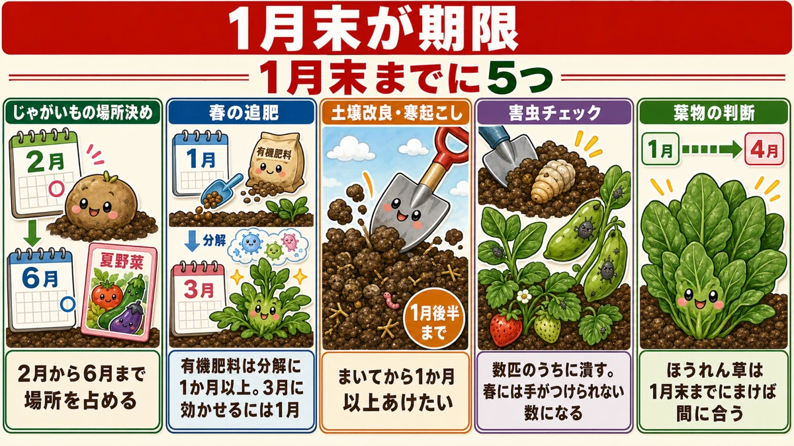

12月にまく・植える野菜｜にんにくの遅植え・プランターで始める5つ・玉ねぎの追肥と霜柱対策
どうも、8150（えいこう）です🌱 家庭菜園歴8年、理科の教員免許を持っていて、有機・無農薬で野菜を育てています。
📖 この記事の目次
この記事で分かること
- 12月は、畑に新しく種をまいたり植えたりできる野菜が少ない月です。でも、まったく何もできないわけではありません。
- 暖かい地域なら、にんにくを12月に植えて、翌年の初夏に収穫している例もあります。ただし、ふつうの時期に植えたものより小さめになることが多いです。
- プランターなら、苗から始められる野菜がまだあります。スナップえんどう、にんにく、そら豆、アスパラガス、玉ねぎなどです。
- 秋に植えた玉ねぎやにんにくは、冬のあいだの追肥と、霜柱の対策が大切です。
- 小さいからといって、肥料をどんどん足すのはよくありません。肥料は足せても、あとから抜くことはできないからです。
- 1月末までに、春に向けた準備（じゃがいもの場所決め、追肥、土の改良など）を進めておきます。
12月になると、畑はすっかり冬の景色です。夏野菜はとっくに片づけて、秋冬野菜の収穫が中心になってきますよね。
「にんにくを植えそびれてしまった」「何か新しく育てたいけれど、もう遅いかな」。そんな方も多いと思います。
安心してください。12月でも、条件がそろえばできることはあります。この記事では、12月に植えられる野菜と、すでに育てている野菜の冬の管理、そして春に向けて1月末までにやっておきたい準備を、順番に書いていきます。

早見：12月の畑の基本（ひと目で分かる目安）
12月に始められるもの
- にんにく：暖かい地域なら、年末から年明けに植える例もある
- プランターで苗から：スナップえんどう、にんにく、そら豆、アスパラガス、玉ねぎ
- にら：休眠中の株を分けて植える
- 玉レタスなど：暖かい窓辺で苗を作ってから植える
12月の管理
- 玉ねぎ：冬の追肥（1回目）
- にんにく：冬の追肥
- 霜柱対策：苗が浮いていたら押さえ、土を寄せる
- 水やり：基本は控えめ。ただし極端に乾いていたら与える
- 掘っておくもの：里芋やしょうがなど、霜に弱いものは掘り上げる
1月末までに終わらせたいこと
- じゃがいもの場所を決める
- 有機の肥料での追肥を済ませる
- 土の改良（たい肥など）を進める
- 害虫のチェック
- 葉物を新しくまくか、畑を休ませるかを決める
作業の手順
ここからは、12月の作業を順番に書いていきます。
手順1：12月にできることと、できないことを分ける
12月は、寒さで野菜の育ちがとてもゆっくりになる時期です。畑に直接種をまいても、ほとんどの野菜は芽が出にくく、育ちません。
12月の作業は、大きく分けて3つです。
- 新しく植えるもの：にんにくの遅植え、プランターでの苗からの栽培など
- 育てているものの管理：玉ねぎやにんにくの追肥、霜柱の対策など
- 春に向けた準備：じゃがいもの場所決め、土の改良など
この3つを分けて考えると、12月にやることが整理しやすくなります。
手順2：にんにくを植えそびれたら
にんにくは、ふつう9月の下旬から10月ごろに植える野菜です。でも、暖かい地域では、11月、さらには12月に植えている人もいます。
ある農家さんは、暖かい地域向けの品種を、最低気温が0度くらいになる年末から年明けごろに植えて、翌年の6月ごろに収穫しています。春の3月から4月に葉が伸びてきたら、葉の色を見ながら追肥で調整する、というやり方です。
ただし、これはあくまで暖かい地域での話です。寒い地域では、冬の寒さで育たず、うまくいかないことがあります。また、ふつうの時期に植えたにんにくより、小さめになることが多いです。大きなにんにくを作りたいなら、来年は適期に植えるのがいちばんです。
手順3：にんにくの植え方
- 種にんにくを、1片ずつにばらす
- とがったほうを上にして、植える
- 上から土をかぶせる
種にんにくから芽が出ていても、そのまま植えて大丈夫です。皮をむいてから植える、という方法や、室内で先に根を出させてから植える、という方法を紹介する人もいます。どちらも、ふつうに皮つきのまま植えても育ちます。
手順4：遅植えのにんにくは、肥料を控えめに
遅く植えたにんにくは、株が小さいので、つい肥料をたくさんやって大きくしたくなりますよね。
でも、肥料が多すぎると、病気が出やすくなったり、かえって育ちが悪くなったりします。家庭菜園の畑は、前に育てた野菜の肥料が残っていることも多いです。
肥料は、あとから足すことはできても、多すぎた肥料を抜くことはできません。最初は控えめにして、春に葉が伸びてきたら、葉の色を見ながら少しずつ足していくほうが安心です。
手順5：カラスに気をつける
にんにくを植えたあと、カラスが土をほじくり返して、種にんにくを引き抜いてしまうことがあります。植えたばかりのときは、不織布やネットをかけておくと安心です。

手順6：プランターで苗から始める
畑ではもう遅い時期でも、プランターなら、苗から始められる野菜があります。
- スナップえんどう：苗を植えて冬を越させ、春に収穫する。採れたての甘さは、買ったものとは比べものにならない
- にんにく：苗を鉢に植える。収穫できる量は少なめでも、手軽に始められる
- そら豆：苗を植えて冬越しさせる。手間は少なめ
- アスパラガス：大きな苗（大苗）から始めると、早く収穫できる。一度植えれば、何年も収穫できる
- 玉ねぎ：苗を植えて冬越しさせる。鉢でも育てられる
どれも、冬を越して春から初夏に収穫する野菜です。プランターなら、日当たりのよい場所に移動できるので、冬の寒さから守りやすいのもよいところです。
手順7：にらを株分けして植える
にらは、冬のあいだは地上の葉が枯れて休んでいますが、土の中の株は生きています。この休眠中の株を掘り上げて、いくつかに分けて植え直すと、春にまた新しい葉が伸びてきます。にらは、一度植えれば何年も収穫できる野菜です。
手順8：窓辺で苗を作る
玉レタスや、わさび菜などは、暖かい窓辺で苗を作っておいて、暖かくなってから畑に植える、という方法もあります。12月に畑に直接まくのではなく、家の中で苗を作るところから始める、というのがポイントです。

手順9：玉ねぎの冬の追肥
秋に植えた玉ねぎは、12月ごろに1回目の追肥をする、というやり方がよく紹介されます。
追肥の時期と回数は、説明によって違います（あとで書きます）。有機の肥料は、効き始めるまでに時間がかかるので、冬の追肥は早めに、と考える人もいます。
追肥のあとは、肥料の上に軽く土をかぶせておきます。
手順10：「小さいから」と肥料を足さない
冬の玉ねぎやにんにくは、地上の葉があまり大きくならず、「小さいな」と心配になることがあります。
でも、冬のあいだは、地上の葉より、土の中の根を育てている時期だ、と説明されます。小さいからといって肥料を足しすぎると、春になってから病気が出やすくなったり、玉の太り方が悪くなったりすることがあります。冬は、あわてずに見守ってください。
手順11：霜柱の対策
12月から2月いっぱいは、霜柱が立ちやすい時期です。
霜柱が立つと、土ごと持ち上げられて、植えたばかりの玉ねぎやにんにくの苗が浮いてしまいます。浮いた苗は、根が切れたり、風で飛ばされたりして、枯れてしまうことがあります。
- 苗が浮いていたら、手でそっと押さえて、土に戻す
- 霜柱を手や足で押しつぶして、まわりの土を寄せて固める
- 株元に、わらや枯れ草、もみ殻などを敷いて、霜柱が立ちにくくする
- 特に、背の低い小さな苗（10cm以下くらい）は、対策が必要
しっかり育った大きな苗なら、わらを敷かなくても大丈夫なことが多いです。
手順12：わらがないときは
わらがない場合は、枯れ草、もみ殻、ござなどで代用できます。防虫ネットや不織布をかけておくのも、寒さと霜柱をやわらげるのに役立ちます。
手順13：冬の水やり
冬の玉ねぎやにんにくには、基本的に水やりはいりません。必要以上に水をやると、根が傷んで、そこから病気が入ることがあるからです。
ただし、晴れが続いて、土の表面だけでなく、中まで乾ききっているような場合は、暖かい日の午前中に水をやってください。プランターは畑より乾きやすいので、土の乾き具合を見て水をやります。
手順14：霜に弱いものを掘っておく
里芋やしょうがなど、霜に弱いものは、霜が降りる前に掘り上げておきます。霜にあたると、芋が傷んでしまいます。
一方、大根やにんじん、白菜、ねぎなどは、畑に置いたまま冬を越せるので、食べる分ずつ収穫していけます。
手順15：にんにくの冬の追肥のやり方
にんにくの冬の追肥は、12月のうちに済ませる、というやり方がよく紹介されます。有機の肥料は、寒い時期は効き始めるまでに時間がかかるので、冬に入れておいたものが、春に葉が伸びはじめるころに効いてくる、という考え方です。
- 株と株のあいだに、小さな穴をあける
- そこに、鶏ふんなどの肥料を少しだけ入れる
- 上から土をかぶせて、肥料が見えないようにする
- 肥料が株に直接ふれないようにする
肥料を土の上にばらまいたままにすると、虫が寄ってきたり、雨で流れたりします。軽くでも土をかぶせておくのがポイントです。
手順16：防虫ネットや不織布をかける
冬の防虫ネットは、虫よけのためだけではありません。冷たい風や霜から、葉のまん中の新しい芽（成長点）を守る役目もあります。
特に、背の低い小さな苗や、遅く植えたにんにくは、寒さで葉が傷みやすいので、ネットや不織布で守ってあげると安心です。ネットの中に不織布を重ねて、二重にする方法もあります。
春になって暖かい日が増えてきたら、ネットは外します。暖かいのにかけたままにすると、中が蒸れて病気が出やすくなるからです。
手順17：雑草は小さいうちに抜く
冬でも、雑草は少しずつ生えてきます。特に、玉ねぎのマルチの穴から出てくる雑草は、放っておくと玉ねぎの苗と根がからまって、抜くときに苗まで一緒に抜けてしまいます。
雑草は、小さいうちに抜くのがいちばんです。玉ねぎの苗を指で押さえながら、雑草だけをそっと引き抜いてください。ピンセットを使うと、細かい雑草も抜きやすくなります。
手順18：畝のあいだの水はけをよくする
冬は、雨や雪どけの水が畝のあいだにたまりやすい季節です。水がたまったままだと、根が傷んだり、春に病気が出やすくなったりします。
畝と畝のあいだを、くわで少し掘って溝にしておくと、水が流れやすくなります。雨のあとに畑を見て、水たまりができていないか確かめておきましょう。
手順19：秋に植えた野菜の収穫を遅らせない
12月は、秋に植えた野菜の収穫がいちばん忙しい時期です。キャベツ、白菜、ブロッコリー、秋じゃがいも、夏にまいたにんじん、ねぎなどが、次々に収穫の時期を迎えます。
収穫が遅れると、キャベツが割れたり、ブロッコリーの花が咲いてしまったりします。収穫できるものは、早めに収穫しておきましょう。一方、大根やにんじんは、畑に置いたまま、食べる分ずつ収穫していくこともできます。
手順20：スナップえんどうやそら豆の冬越し
秋にまいたスナップえんどうやそら豆は、小さな苗のまま冬を越します。冷たい北風があたると、葉が傷んでしまうことがあります。
苗のまわりを、ネットなどで囲んで、風よけを作ってあげると、冬越しがうまくいきやすくなります。特に、まだ小さい苗には、この対策が役立ちます。

プランターで育てるときの基本
畑がなくても、プランターなら12月から始められる野菜があります。ここでは、プランターで冬を越させるときの基本をまとめておきます。
植えつけの流れ
- 鉢の底に、水がよく抜けるように鉢底石を入れる
- 野菜用の培養土を入れる
- 苗を植えて、株元を軽く押さえる
- 植えつけた直後に、鉢の底から水が流れ出るまでたっぷり水をやる
- 日当たりのよい場所に置く
植えつけた直後の水やりは、根と土をなじませるために大切です。そのあとは、土の表面が乾いてから水をやるようにします。冬は乾きにくいので、夏と同じ感覚で毎日水をやらないように気をつけてください。
置き場所は「日当たり」と「冷たい風」
冬のプランターは、できるだけ日の当たる時間が長い場所に置きます。南向きのベランダや、建物の南側などがおすすめです。
また、冷たい北風が直接あたる場所は避けます。夜に冷え込みそうな日は、壁ぎわに寄せるだけでも、寒さがやわらぎます。プランターは動かせるのがいちばんの強みなので、天気に合わせて置き場所を変えてみてください。
プランターの玉ねぎは、肥料が効きすぎに注意
市販の培養土には、はじめから肥料が入っているものが多いです。そこに玉ねぎを植えると、肥料が効きすぎて苗が大きくなり、春にとう立ちしやすくなる、という説明があります。
プランターの玉ねぎは、苗と苗の間隔をつめて植えて、小さめの玉を数多く収穫する、という考え方もあります。大きな玉を狙うより、とう立ちさせずに収穫まで持っていくことを目標にすると、うまくいきやすいです。
アスパラガスとにらは、長く付き合う野菜
アスパラガスとにらは、一度植えれば、何年も収穫できる野菜です。そのぶん、植える場所は慎重に決めましょう。
アスパラガスは、種から育てると、収穫できるまでに何年もかかります。大きく育った大苗から始めると、早く収穫できます。にらは、とても丈夫で、畑のすみに植えておくと、1年に何回も収穫できます。どちらも、プランターより、畑のすみや大きめの鉢のほうが育てやすいです。
日陰の場所は、みょうがに
畑や庭の、日当たりがよくない場所の使い道に困っている方もいるかもしれません。みょうがは、日陰でも育つ野菜として紹介されることがあります。ほかの野菜が育ちにくい場所を活かせるので、覚えておくと便利です。
地域による違いを知っておく
12月の畑仕事は、住んでいる地域によって、できることがかなり違います。
暖かい地域
冬でも土が凍ることが少ない地域では、にんにくの遅植えや、トンネルを使った葉物の栽培など、できることが比較的多いです。ただし、暖かい冬は、玉ねぎの苗が大きくなりすぎることがあるので、肥料のやりすぎに気をつけます。
寒い地域
冬に土が凍る地域や、雪が積もる地域では、12月に新しく植えるのは難しいです。秋に植えた玉ねぎやにんにくの冬越し対策（わらを敷く、ネットをかける）を中心に考えます。雪が積もる地域では、雪の下で冬を越す、という考え方もあります。
迷ったら、地元の情報を
同じ県の中でも、山あいと海沿いでは、冬の寒さがかなり違います。近くの園芸店や、ご近所で畑をしている人に、「このあたりでは、にんにくはいつまで植えられますか」と聞いてみるのが、いちばん確かな方法です。
1月末までに終わらせたいこと
①じゃがいもの場所を決める
春じゃがいもは、2月下旬から3月に植えます。どこに植えるかを、今のうちに決めておきましょう。前の年にトマトやなすなど、同じナス科を植えた場所は避けます。
②有機の肥料での追肥を済ませる
有機の肥料は、寒い時期は効き始めるまでに時間がかかります。春に効かせたい追肥は、1月下旬ごろまでに済ませておく、という考え方があります。化成肥料は早く効くので、もう少し遅くても間に合います。
③土の改良は、1月後半までに
春に使う畑に、たい肥などを入れて土を改良するなら、1月後半までに済ませておくと、春の植えつけまでに土がなじみます。
たい肥は、入れてすぐに野菜を植えると、まだ土になじんでおらず、根を傷めることがあります。植えつけの少なくとも数週間前には入れておき、土とよく混ぜておきましょう。夏野菜の場所を今のうちに決めておくと、どこにどれだけ入れればいいかも決めやすくなります。前の年に何を植えたかをメモしておくと、同じ仲間の野菜を続けて植えてしまう失敗も防げます。
④害虫のチェック
冬でも、暖かい日には虫が動いていることがあります。玉ねぎやそら豆の新芽、葉の裏に、アブラムシなどがついていないか見ておきましょう。
⑤葉物をまくか、畑を休ませるか
空いている畝に、冬の葉物をまくか、春まで休ませるかを決めます。冬にまいても、ほとんど育たないことが多いので、トンネルで保温しないなら、春まで休ませて、寒起こしをするのもいい選択です。ほうれん草など、小さいタイプなら育つ可能性もある、という説明もあります。
寒起こしは、空いている畑の土を、くわやスコップで大きく掘り返して、そのまま寒さにあてておく作業です。土の塊は、凍ったりとけたりをくり返すうちに、細かくほぐれていきます。土の中にいる虫が寒さにさらされる、とも言われます。掘り返した土は、細かく砕かずに、ごろごろした塊のまま置いておくのがポイントです。
冬の畑であると便利なもの
12月の作業で、よく使うものをまとめておきます。全部そろえる必要はありません。手元にあるもので代用できるものも多いです。
- わら、枯れ草、もみ殻：株元に敷いて、霜柱と寒さをやわらげる
- 防虫ネット、不織布：冷たい風や霜から苗を守る
- 小さな移植ごて：追肥の穴をあけたり、土を寄せたりする
- くわ：畝のあいだの溝を掘って、水はけをよくする
- ピンセット：玉ねぎのまわりの小さな雑草を抜く
- 軍手と防寒具：冬の畑は思った以上に冷えるので、手と体を守る
冬の畑は、日が短く、夕方になると急に冷え込みます。作業は、日が高くて暖かい昼前後にするのがおすすめです。
失敗の見分け方
植えたにんにくが、カラスに抜かれた
植えた直後は、カラスが種にんにくを引き抜くことがあります。見つけたら植え直して、不織布やネットをかけて守ってください。
玉ねぎの苗が、浮いて倒れていた
霜柱で浮いたか、植えたときの押さえが足りなかった可能性があります。そっと植え直して、株元を押さえ、土を寄せてください。
春になって、玉ねぎやにんにくが病気になった
冬のあいだに肥料をやりすぎたか、水をやりすぎた可能性があります。また、収穫が遅れて、梅雨の雨にあたると、病気や腐りが出やすくなります。
遅植えのにんにくが、小さかった
遅く植えると、どうしても小さめになります。来年は適期（9月下旬から10月ごろ）に植えてみてください。
プランターの土が、いつも湿っている
冬は土が乾きにくいので、夏と同じように水をやっていると、土がいつも湿った状態になってしまいます。根が傷む原因になるので、土の表面が乾いているのを確かめてから水をやるようにしてください。受け皿に水がたまっていたら、捨てておきます。
玉ねぎの苗が、春にとう立ちした
苗が大きくなりすぎた状態で冬を越すと、とう立ちしやすくなります。とう立ちしたら、花の茎（ねぎ坊主）は早めに折り取ります。玉は小さめになったり、芯が硬くなったりしますが、早めに収穫して食べることはできます。次の年は、植える時期と冬の肥料の量を見直してみてください。
説明が分かれていること
玉ねぎとにんにくの冬の追肥
- 有機の肥料でも、にんにくは複数回、玉ねぎは冬の1回だけ追肥する、という説明
- 玉ねぎも、品種によって冬と春に分けて追肥する、という説明
- 遅植えのにんにくは、春先に葉の色を見ながら追肥する、という説明
- 有機栽培の追肥は、冬が最後になる、という説明
品種、生育、地域、使う肥料で変わります。いつ、何回、と一律に決めず、株のようすと肥料の効き方から考えてください。
にんにくの植えつけ時期
- 適期を守って、早めに植え、年内に葉を広げることが大切、という説明
- 暖かい地域なら、年末から年明けに植えても収穫できる、という実践
大きなにんにくを作りたいなら適期に。植えそびれたら、暖かい地域なら遅植えも試せる、と考えてください。
元肥は多めか、少なめか
- 元肥を多めに入れる、という説明
- 前の肥料が残っていることを考えて少なめにし、葉の色を見て追肥で調整する、という説明
畑のこれまでの使い方で決めてください。迷ったら少なめから始めるほうが安心です。
冬の水やり
- にんにくには、冬は水をやらない、という説明
- 土の中まで乾ききっているなら、水をやる、という説明
どちらも、「必要以上にはやらない」という点では共通しています。
にんにくの皮をむくか
- 皮をむいて植える、室内で根を出してから植える、という方法
- 皮をむかずに、そのまま植える、という方法
どちらでも育ちます。
株元にわらを敷くか
- 小さな苗は、わらや枯れ草を敷いて霜柱から守る、という説明
- しっかり育った立派な苗なら、わらを敷かなくても大丈夫、という説明
苗の大きさで決めてください。背の低い小さな苗にだけ敷く、という使い分けで十分です。
よくある質問
Q. 寒い地域でも、12月ににんにくを植えられますか？
A. 寒い地域では、12月に植えると、冬の寒さで育たずにうまくいかないことが多いです。遅植えは、暖かい地域での話と考えてください。寒い地域では、来年の秋に適期で植えるのがおすすめです。
Q. 12月に種をまける野菜はありますか？
A. 畑に直接まいても、ほとんどの野菜は寒くて育ちません。トンネルで保温すれば、ほうれん草や小松菜などをまくことはできますが、育つのはとてもゆっくりです。家の中の窓辺で苗を作って、春に植える、という方法のほうが確実です。
Q. 玉ねぎの苗が小さいまま、冬を迎えてしまいました
A. 小さな苗は、霜柱で浮いたり、寒さで傷んだりしやすいので、株元にわらや枯れ草を敷いて守ってください。小さいからといって肥料を足しすぎないこと、浮いていたら押さえて土を寄せること、の2つを心がければ大丈夫です。
Q. アスパラガスは、プランターでも育ちますか？
A. 大きめの鉢やプランターなら育てられます。大苗から始めると、早く収穫できます。収穫したあとも、茎や葉をすべて切らずに残しておくと、その葉で作った栄養が地下の株にたくわえられて、翌年も芽が出てきます。
Q. 冬のあいだ、畑に行く回数はどれくらいでいいですか？
A. 冬は野菜の育ちがゆっくりなので、週に1回くらいでも大丈夫なことが多いです。霜柱で苗が浮いていないか、虫がついていないか、収穫できる野菜はないか、を確かめに行きましょう。
Q. 玉ねぎの葉が、冬に枯れてきました。大丈夫ですか？
A. 真冬になると、玉ねぎの葉の先が枯れて、元気がないように見えることがあります。寒さで休んでいる状態なので、多くの場合は大丈夫です。ただし、苗が浮いて根が切れていないか、株元は確かめておいてください。
Q. 冬に液体の肥料をあげてもいいですか？
A. 冬は土が湿っていることが多く、そこに液体の肥料をやると、水が多くなりすぎて根が傷むことがある、という説明があります。冬の追肥は、粒の肥料を少しだけ土に混ぜるほうが無難です。
Q. 追肥を1月中にできなかったら、2月にやってもいいですか？
A. 2月以降に追肥をすると、春に葉ばかりが伸びて、玉が太りにくくなったり、虫や病気にあいやすくなったりする、という説明があります。冬の追肥は1月中に済ませる、と考えておくと安心です。どうしても遅れた場合は、葉の色を見て、量を控えめにしてください。
Q. 小さな種にんにくしか残っていません
A. 小さな種にんにくは、大きく育ちにくく、病気にもなりやすいと言われます。そういうときは、1か所に2〜3粒ずつ植えて、葉を食べる「葉にんにく」として育てる、という方法があります。
Q. 玉ねぎが、年明けに大きくなりすぎました
A. 暖かい冬だと、玉ねぎの苗が年内に大きく育ちすぎることがあります。苗が大きくなりすぎた状態で寒さにあたると、春にとう立ち（花の茎が伸びること）しやすくなります。大きく育っている苗には、それ以上追肥をしないでください。
Q. にんにくは、いつごろ収穫できますか？
A. 植え方と品種で変わります。プランターに苗を植える例では、翌年の4月から5月ごろに収穫する、という説明があります。暖かい地域で年末から年明けに遅植えする例では、翌年の6月ごろに収穫しています。葉が黄色くなって倒れはじめたら、収穫の目安です。
Q. 12月に、そら豆やスナップえんどうの苗を植えても間に合いますか？
A. プランターに苗を植えて、冬を越させる方法が紹介されています。寒い地域では、冷たい風で苗が傷みやすいので、日当たりのよい、風の当たらない場所に置いてください。畑に植えるなら、苗のまわりをネットなどで囲んで、風よけを作ってあげると安心です。
Q. 雪が降ったら、何かしたほうがいいですか？
A. 玉ねぎやにんにくは、雪の下でも冬を越せることが多いです。雪がやんだら、ネットやトンネルが雪の重みでつぶれていないかを確かめてください。つぶれたままだと、苗が押されて傷むことがあります。雪をそっと払って、ネットを張り直しておきましょう。雪どけの水が畝のあいだにたまるときは、溝を掘って水の逃げ道を作ってあげると安心です。
学ぶ🔬 にんにくや玉ねぎが冬にやっていること
ここからは、冬の野菜のしくみについて、少しだけ深く書いておきます。読み飛ばしても大丈夫です。
地上は静か、でも土の中では
冬の玉ねぎやにんにくは、地上の葉があまり伸びず、じっとしているように見えます。でも、土の中では、春に向けて根を張っている時期だ、と説明されます。
冬のあいだにしっかり根を張っておくと、春に暖かくなったとき、一気に葉を伸ばして、玉を太らせる力になります。冬の地上部が小さくても、あわてなくていいのは、このためです。
だから、肥料を増やすのは方向違い
冬に地上の葉を大きくしようとして肥料をたくさんやっても、寒さで吸収はゆっくりです。使われなかった肥料は、春になってから一気に効いて、葉ばかり茂ったり、病気が出やすくなったりすることがあります。
冬は、根を育てる時期。肥料で無理に大きくしようとせず、春の成長に備えて、見守るのがいちばんです。
アスパラガスは、葉で栄養をためる
アスパラガスは、春に出てくる若い芽を食べる野菜です。収穫が終わったあとに伸びる茎や葉で光合成をして、その栄養を土の中の株にたくわえます。そして、そのたくわえた栄養で、翌年の春にまた芽を出します。
収穫しすぎず、茎や葉を残しておくことが、毎年長く収穫を続けるための秘訣なんですね。
なぜ霜柱は、苗を持ち上げるのか
冬の夜、地面の表面が冷えて凍ると、土の中の水分が、細いすき間を伝って表面に吸い上げられ、次々に凍って、細い氷の柱になっていきます。これが霜柱です。
霜柱が伸びるとき、土の表面ごと持ち上げます。植えたばかりで根が浅い苗は、土と一緒に持ち上げられて、根が浮いてしまうんです。株元にわらなどを敷くと、地面が冷えにくくなって、霜柱が立ちにくくなります。
有機の肥料は、なぜ冬に時間がかかるのか
鶏ふんや油かすなどの有機の肥料は、土の中の小さな生きもの（微生物）が分解してはじめて、野菜が吸える形になります。
微生物は、寒いと働きがゆっくりになります。だから、冬に入れた有機の肥料は、すぐには効きません。冬のうちに入れておくと、春に暖かくなって微生物の働きが活発になるころ、ちょうど効きはじめる、というわけです。
逆に、春になってから有機の肥料を入れると、効きはじめるころには、もう玉を太らせる時期が終わりかけていることがあります。冬の追肥が早めに、と言われるのは、このためです。
玉ねぎの葉の栄養は、最後に玉へ移る
玉ねぎは、収穫が近づくと、葉の栄養が玉へ移っていき、やがて葉が倒れて枯れていきます。
ところが、春の遅い時期まで肥料が効いていると、葉がいつまでも元気なままで、栄養が玉に移りにくくなります。すると、玉の太り方が悪くなったり、保存したときに傷みやすくなったりする、と説明されます。
冬の追肥を早めに済ませて、遅い時期には肥料をやらない。これは、玉ねぎの「最後に葉の栄養を玉に移す」というしくみに合わせたやり方なんですね。
とう立ちは、苗の大きさと寒さで決まる
玉ねぎは、ある程度の大きさまで育った苗が、冬の寒さに長くあたると、春に花の茎を伸ばす準備を始めます。これが、とう立ちです。とう立ちした玉ねぎは、玉の中に硬い芯ができて、食べられる部分が少なくなります。
小さい苗のまま冬を越せば、とう立ちしにくくなります。秋に早く植えすぎたり、冬に肥料をやりすぎて苗が大きくなりすぎたりすると、とう立ちの心配が増えます。「冬に大きくしすぎない」ことも、玉ねぎ作りの大切なポイントです。
にんにくは、暑さで休み、涼しくなって目を覚ます
にんにくは、夏の暑い時期には休んでいて、秋に涼しくなると、芽や根を出しはじめる性質があります。だから、にんにくは秋に植える野菜なんですね。
遅く植えたにんにくも、寒さの中でゆっくり根を出し、春に暖かくなると一気に葉を伸ばします。ただ、冬が来るまでに育つ時間が短いぶん、春までに作れる葉の量が少なくなり、そのぶん玉も小さめになりやすい、というわけです。
まとめ
ここまで読んでくださって、ありがとうございます！
12月の畑のポイントを、もう一度まとめておきます。
- 12月は、新しく植える、育てているものを管理する、春に向けて準備する、の3つ
- にんにくは、暖かい地域なら年末から年明けに植える例もある。ただし小さめになりやすい
- 遅植えのにんにくは肥料控えめ。春に葉の色を見て足す
- プランターなら、スナップえんどう、にんにく、そら豆、アスパラガス、玉ねぎを苗から
- 玉ねぎ・にんにくの冬の追肥は、品種と肥料から考える
- 小さいからといって肥料を足さない。冬は根を育てる時期
- 霜柱で浮いた苗は押さえ、株元にわらや枯れ草を
- 冬の水やりは控えめ。乾ききったときだけ
- 1月末までに、じゃがいもの場所決め、追肥、土の改良を
寒い12月の畑は、作業が少ないぶん、春に向けた準備をじっくりできる季節です。
まずは、玉ねぎやにんにくの苗が霜柱で浮いていないか、畑をひと回りしてみてください🧄
にんにく種球（ホワイト六片）
記事の主役です。12月に植えても1個70〜80gにはなります。芽が出ていても問題ありません。頭がちょっと隠れるくらいの深さで、さして置くだけ。台所に余っているものより、植える用の種球のほうが確実です。
![[商品価格に関しましては、リンクが作成された時点と現時点で情報が変更されている場合がございます。]](https://hbb.afl.rakuten.co.jp/hgb/565b74ce.f30a48e7.565b74cf.8a827250/?me_id=1368676&item_id=10000301&pc=https%3A%2F%2Fthumbnail.image.rakuten.co.jp%2F%400_mall%2Farakawaseed%2Fcabinet%2Fcompass1659994587.jpg%3F_ex%3D240x240&s=240x240&t=picttext "[商品価格に関しましては、リンクが作成された時点と現時点で情報が変更されている場合がございます。]")

不織布
植えたばかりの種球は、カラスにほじくり返されます。上からかけておくだけで防げます。防寒も兼ねられるので、この時期はまず1枚あると安心です。
![[商品価格に関しましては、リンクが作成された時点と現時点で情報が変更されている場合がございます。]](https://hbb.afl.rakuten.co.jp/hgb/56bc237a.e97551b1.56bc237b.2513ed10/?me_id=1310260&item_id=10000879&pc=https%3A%2F%2Fthumbnail.image.rakuten.co.jp%2F%400_mall%2Fdiokasei%2Fcabinet%2F007fusyokufu%2F12g%2Fimgrc0092049705.jpg%3F_ex%3D240x240&s=240x240&t=picttext "[商品価格に関しましては、リンクが作成された時点と現時点で情報が変更されている場合がございます。]")
もみ殻くん炭
霜柱で苗が浮くのを防ぎます。もみ殻より、くん炭のほうがミネラルの補給になり、地温も上がります。アルカリ性なので、株元にうっすらまく程度で十分です。
![[商品価格に関しましては、リンクが作成された時点と現時点で情報が変更されている場合がございます。]](https://hbb.afl.rakuten.co.jp/hgb/56bc30bc.01c5b89d.56bc30bd.ee310357/?me_id=1231595&item_id=10000412&pc=https%3A%2F%2Fthumbnail.image.rakuten.co.jp%2F%400_mall%2Fplanto-iwa%2Fcabinet%2F2707.jpg%3F_ex%3D240x240&s=240x240&t=picttext "[商品価格に関しましては、リンクが作成された時点と現時点で情報が変更されている場合がございます。]")
炭化鶏ふん
玉ねぎの1回目の追肥に使います。中生・晩生なら12月下旬から1月。株元から少し離して、軽く一つまみだけ。すぐ効いて持続もするので、この時期に向いています。
![[商品価格に関しましては、リンクが作成された時点と現時点で情報が変更されている場合がございます。]](https://hbb.afl.rakuten.co.jp/hgb/55e7612a.7de1526b.55e7612b.01a50904/?me_id=1214866&item_id=10002182&pc=https%3A%2F%2Fthumbnail.image.rakuten.co.jp%2F%400_mall%2Fkaju%2Fcabinet%2F00714580%2F03462454%2F07486601%2Fimgrc0071643813.jpg%3F_ex%3D240x240&s=240x240&t=picttext "[商品価格に関しましては、リンクが作成された時点と現時点で情報が変更されている場合がございます。]")
スナップエンドウのタネ（つるなし）
プランターで12月に植えられる筆頭です。管理がほとんど要らず、直径30cmのプランターで1か月ぶん穫れます。畑が埋まっていても、これなら始められます。
![[商品価格に関しましては、リンクが作成された時点と現時点で情報が変更されている場合がございます。]](https://hbb.afl.rakuten.co.jp/hgb/552615f0.9cc2855e.552615f1.776f7de9/?me_id=1251188&item_id=10000610&pc=https%3A%2F%2Fthumbnail.image.rakuten.co.jp%2F%400_mall%2Fyonezawa%2Fcabinet%2Ftane01%2F10mame%2Fhorunsnack.jpg%3F_ex%3D240x240&s=240x240&t=picttext "[商品価格に関しましては、リンクが作成された時点と現時点で情報が変更されている場合がございます。]")